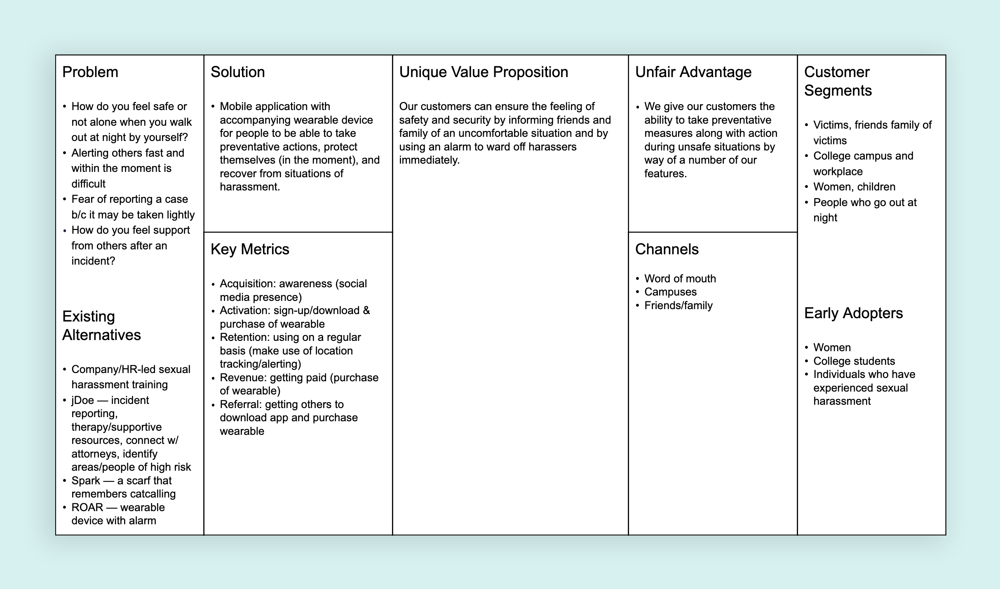
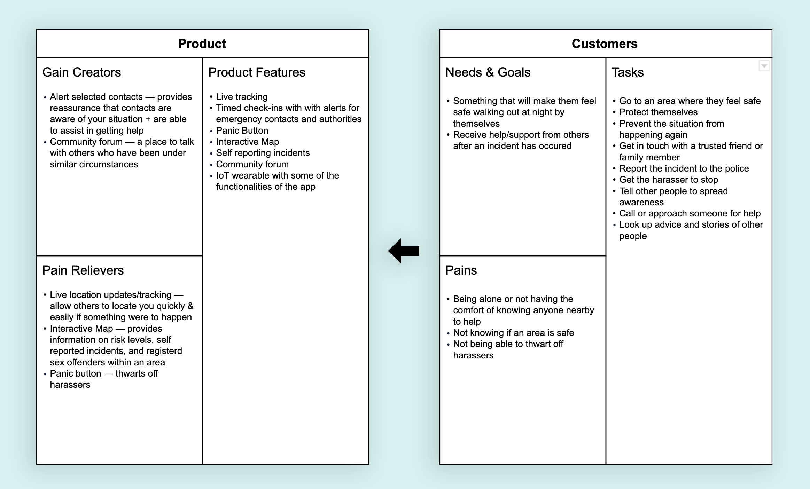
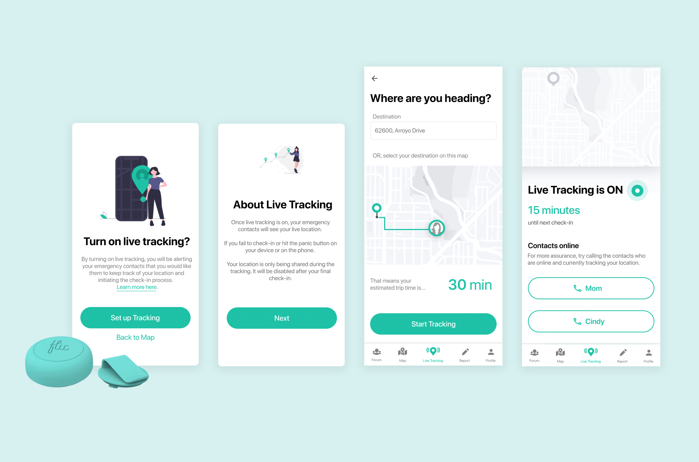
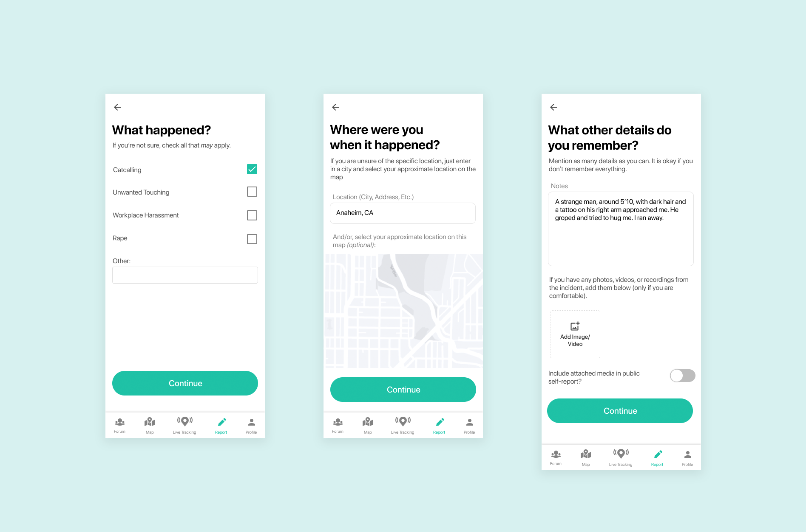
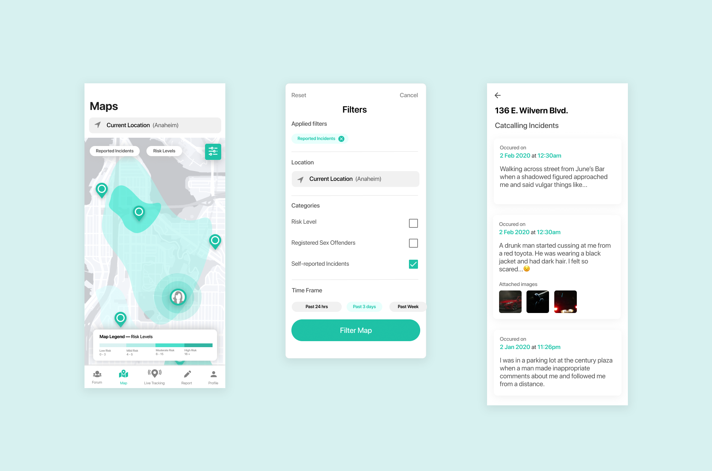
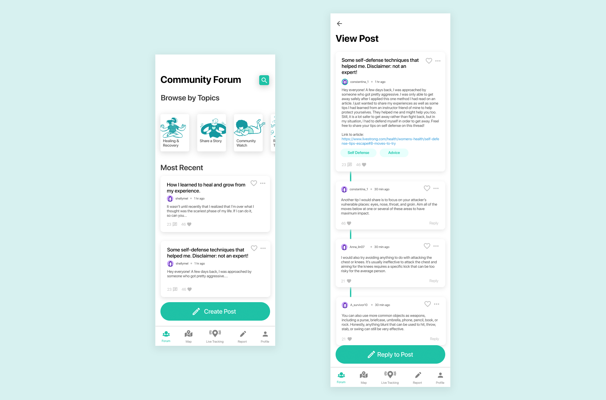

Assure
Role
Developer
Timeline
January 2020 to March 2020
Context
University of California, Irvine IN4MATX 134
Tools
Figma and Wix
Project Brief
Assure is a mobile application and wearable that addresses concerns of sexual harassment. If you’ve ever felt wary walking out at night by yourself, unsure of how to protect yourself from a harasser, or want a space to communicate with others who’ve gone through similar situations, Assure aims to provide solutions to address these very problems. Currently, there is a lack of resources as well as support available for individuals who may be at risk or who have experienced some form of sexual harassment. Our product aims to fill that gap by providing a set of features that help a user to prevent, protect, and recover from incidents of sexual harassment.
My Role
My main role for this project was a developer. I shortly worked with iOS Swift to build the mobile app, but as our MVP pivoted, we decided to build an advertisement website for our MVP instead. In addition to development, I researched competitors, conducted interviews and surveys, and made important design decisions for the prototype.
Lean Canvas
Value Proposition Canvas
Research
- What are people's understanding of sexual harrassment?
- How safe do people feel being alone at night, or in the daytime?
- What measures do people currently take when they feel uncomfortable or unsafe?
- What actions would they take or want to take in such circumstances?
We created a list of questions we wanted to ask the interviewees that would help us address our goals. For example, we asked:
- Have you ever felt afraid of going out on your own? When? Why?
- What protective measures do you normally take?
We started by defining goals and creating a list of questions for the survey. The questions on the survey were broken down into 3 sections - General Info, Personal Experience and Witnessing. Questions included:
- How safe do you feel to walk alone during the day/night?
- If you have experienced sexual harassment, where did it take place? (optional — feel free to omit this if you are not comfortable)
Findings
To synthesize our data, we created an affinity diagram using post-it notes that had our participant's responses written. Here were the findings:
- Presence of other people helps thwart potential advances.
- People avoid walking at night and in dangerous areas.
- People find that reporting incidents is unnecessary. They instead talk to friends or family to cope with it.
- During uncomfortable situations, people don’t have enough time to react.
The data collected included percentages broken down by the number of users who answered the questions. The short answer responses on the survey were used for affinity diagramming along with responses from interviews. The numbers for certain responses were used to inform analysis of interview questions.
Some key insights on the survey included:
- ~61% of respondents feel unsafe walking at night.
- ~66% of respondents have experienced some form of harassment in the past.
- Walking with someone is one of the most effective protective measures.
- ~48% of respondents are not so likely to report an incident of harassment.
Features
With live tracking, users can input where they're heading and the system would periodically check in to make sure they're safe. Or, they can immediately turn on live tracking to alert their loved ones that they're feeling unsafe and to check in on them.
While their loved ones may not be with them in-person, having their presence and acknowledgement at the other end of the line can provide added reassurance and sense of security since these contacts can be more equipped to respond.
Live tracking can either be used on the mobile app or the IoT device. The IoT device can be used to send a check-in or contact the authorities in case of an emergency.
After an incident, whether or not it was recorded through Assure’s live-tracking feature, can still be reported. These reports aren’t official reports that are sent to authorities. Instead, these are self-reports that can either be used for future reference or, with the permission of the individual, added to the community map to populate the self-reported incidents view on the Interactive Map.
When users are planning for a trip or preparing to head out, they can use the interactive map to learn more about the surrounding areas. This feature serve to inform, and hopefully prevent, a user from encountering some form of sexual harassment. By providing different information regarding certain areas such as risk levels, registered sex-offenders, and self-reported incidents, users can be more informed about the areas they are in or areas they will visit so that they can be more cautious or be prepared to take protective measures.
The community forum is a forum for individuals looking for a supportive environment to heal in or for individuals to find more information about ways to protect themselves or get justice and overall, just a place to connect with others and tackle the issue of sexual harassment together. Users can create posts, look and read through other posts and pages, as well as interact with other posts and users by commenting and liking posts and messages.
MVP
Our original MVP was supposed to be a Kickstarter but we quickly had to rethink this goal since it would take multiple days for it to be approved and we didn’t have a clear idea on how to promote the Kickstarter without any advertisements or promotional videos. So instead, we created a website to garner attention to the idea of our product in the meantime.
Within our product hypothesis, we stated that Assure will solve the lack of reources and support available to individuals who may be at risk or have experienced sexual harassment. We have found through our surveys and interviews that many early adopters see a true need for this type of product.
Our prototype was vital in getting feedback on the type of application that our audience needed. Without the constant iterations of bettering our prototype, we would not know the exact features our primary users would utilize most or how they would best navigate the application.
Our website will help to serve as our main form of advertisement of our product to garner attention and further connect to our audience while we theoretically work to implement our mobile application and IoT wearable device.
Lessons Learned
Learning about the problem spaceMany people approach sexual harrassment differently. As a woman, I've had countless experiences feeling unsafe when I'm alone in unfamiliar areas. It was great to hear from so many different people about how they approach the situation and how we could help build a product that would satisfy their needs.
Product strategyI learned a lot about creating a product that is not only usable, but also of value and solves actual user needs. After conducting interviews and surveys, we had very good insights about what potential users would want to see in an application that would make them feel safer.
Process of developing an MVPCreating an MVP is not a one-and-done task. After conducting prototype testing, we had to redefine our MVP - we had to fail. We had to determine fail points, realign value propositions, adjust based on our time constraints, and realize missed opportunities. After doing this, we were able to build an MVP that would have value to our potential customers.